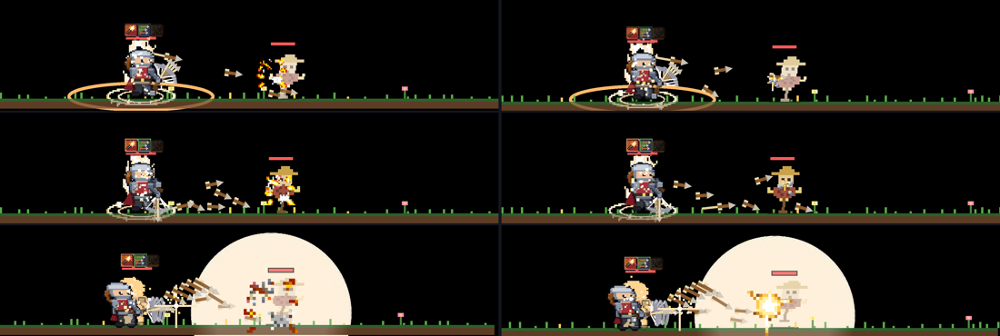
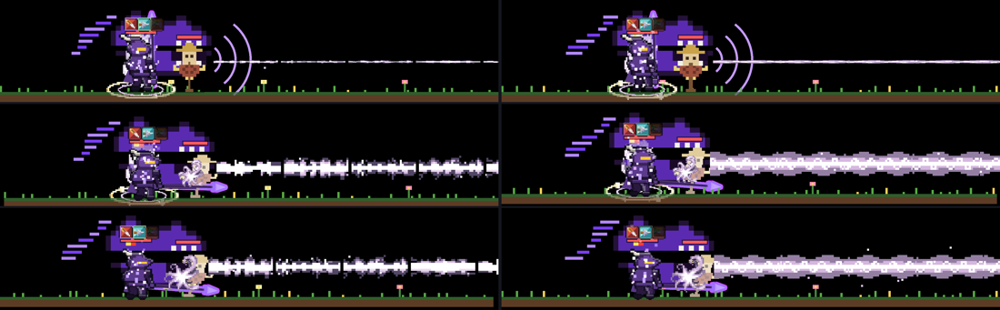
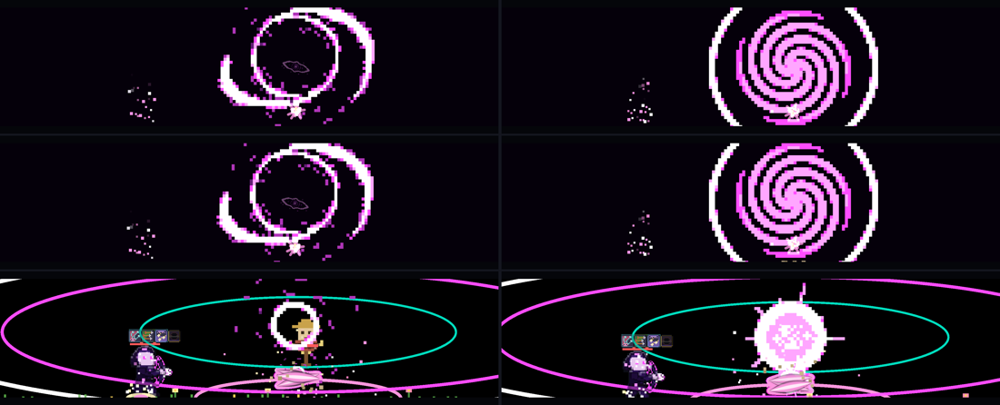
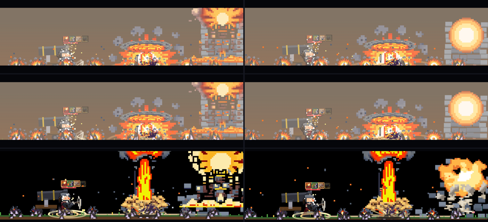
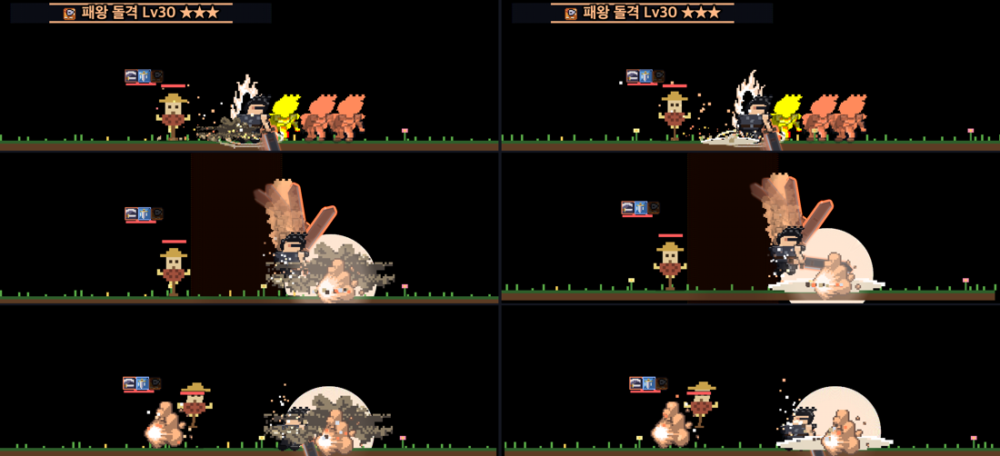
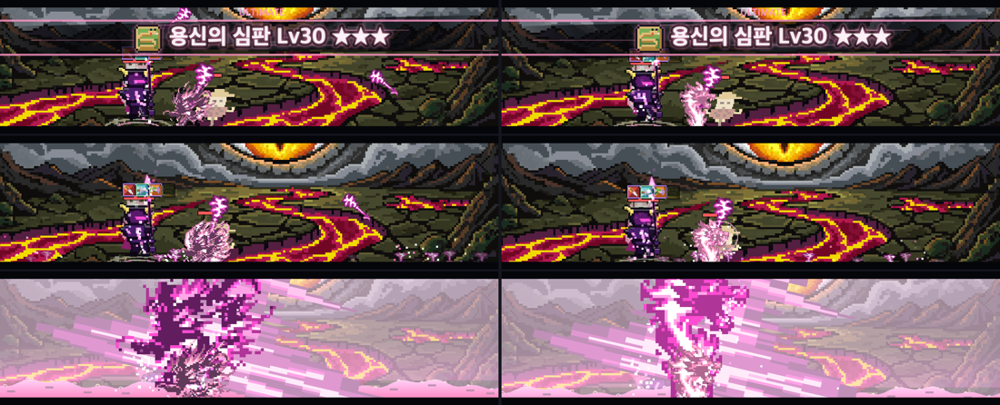

VFX 다시 뽑기 계획 — 품질 낮은 6장
2026-10-16 · 스펙
docs/specs/skill-vfx.md "다시 뽑기 계획" · 사용자 승인(상한 26회) 뒤 진행 — 유료 2회 사용
유료 상한 26회 (예상 8~14)
계정 잔량 1,163 / 2,000 (10-16) · 안전 바닥 300
1단계 무료 vfx_workbench — k22·e18·k36
ComfyUI 는 Windows PC 에만 — 이 맥에서는 못 씀
결과 (2026-10-16 진행 — 확인 대기)
유료 2회 / 상한 26 (k32 키 1 + 애니 1)
무료 vfx_workbench 5장 — k22·e18·k36 + 계획보다 앞당긴 e14·k37
내 몫 2회는 응답 usage 합계 · 계정 잔량 1,129 (같은 계정을 다른 세션도 씀)
| 시트 | 만든 길 | 유료 | 둘레 어두운 비율 | 깎인 비율 | 부스러기/장 | 메모 |
|---|---|---|---|---|---|---|
| k22 다연장 명중 | workbench (섬광 + 은회색 쇳조각 3) | 0 | 0.00 | 0% | 0 | 색종이 부스러기 → 별 섬광 |
| e18 용의 숨결 타일 | workbench (물결 띠, 폭 34 에 2주기) | 0 | 0.00 | 0% | 0 | 끝 열 = 첫 열로 이음매 맞춤, 너무 하얘서 바깥 띠를 직업색 단으로 내림 |
| k36 차원 붕괴 막타 | workbench (고리·소용돌이 수축 → 섬광 → 고리 폭발) | 0 | 0.00 | 0% | 0.6 | 검은 몸 없음 |
| k37 대공성포 막타 | workbench (불덩이 + 돌덩이 5 + 먼지) | 0 | 0.00 | 0% | 0.8 | 계획은 유료였으나 무료로 기준 통과 |
| e14 대검 땅 파임 | workbench (고랑 + 밝은 윗선 + 흙덩이 3) | 0 | 0.00 | 0% | 0 | 계획은 유료였으나 무료로 기준 통과 |
| k32 용황 막타 | PixelLab 키 1 + 애니 1 → 앞 3장 + 무료 후처리 2장 | 2 | 0.00 | 0% | 0.4 | 워크벤치는 머리 속 명암을 못 넣어 유료로. 애니가 "터짐" 대신 진해지기만 해서 뒤 2장은 dev/vfx5/burst.py(테두리 침식 + 입 앞 섬광·고리) |
게임 전후 (dev/skills.html ★★★, 그 시트가 그려지는 순간 세 장면 · 왼쪽 전 / 오른쪽 후):






아래 "시트별" 카드의 원본·게임 줄은 이제 새 시트다 (옛 시트는 dev/vfx5/old/).
순서
1. 무료 — vfx_workbenchPixelLab MCP 구독자 무료 도구. 부품(섬광·고리·파편·빛띠)을 내가 얹어 그린다. 단순한 모양 셋(k22·e18·k36)을 먼저.
2. 유료 — PixelLab1단계로 기준을 못 넘은 것만. 키 그림
create_image_pixen 1회 → 애니 animate-with-text-v3 1회(4프레임). k37·k32 는 애니 2회.3. 후처리 — 무료로더가 검은 테·작은 검은 면을 벗긴다. 찌꺼기는
clean.py·dedark.py, 손질은 pixelart_workbench.4. 확인전수조사 측정 +
dev/skills.html ★★★ 전후 캡처를 이 페이지에 붙여 사용자 확인.공통 주문: 바탕 투명 · 외곽선 없음(지난번 검은 테의 원인 selective outline 금지) · 몸은 중간~밝은 명암(밝기 0.3 미만 면적 10% 이하) · 작은 부스러기 대신 큰 덩어리 2~4개 · 프레임마다 같은 중심.
시트별 — 새 시트와 주문서
게임 로더를 숨은 창에서 돌리는 중… (10초쯤)
호출 수 상한
| 시트 | 1단계 | 키 ≤ | 애니 ≤ | 상한 | 예상 | 상한에 닿으면 |
|---|
1단계(무료)로 해결되는 시트 수 / 3 · 유료 다시 뽑기 횟수
→ 예상 유료 호출 -회 (상한 26) · 끝난 뒤 잔량 약 -회
실패 시 수리법
| 실패 | 수리 (무료 먼저) | 그래도 안 되면 (유료 1회) |
|---|---|---|
| 검은 테·검은 면이 남음 | 로더(전수조사 보강판)가 벗김, 남으면 dedark.py | "no outline, light values" 강조해 키 다시 |
| 부스러기·조각 | clean.py 로 4픽셀 이하 덩어리 지우기, pixelart_workbench 로 메우기 | 키 다시 |
| 프레임마다 모양이 튐 | 키 그림 한 장만 쓰고 코드로 크기·알파·회전 재생 (W1 방식, 호출 0) | 애니 다시 |
| 크기·비율 안 맞음 | 정수배 nearest 로 줄이고 남는 칸 자르기 | — |
| e18 타일 이음매 | 좌우 4px 를 서로 섞기, 또는 가운데만 잘라 반복 | workbench 로 다시 (무료) |
| 직업색으로 칠하면 뭉개짐 | 흑백으로 명암 확인, 가장 어두운 단 면적이 크면 밝기 끌어올리기 | 키 다시 |
| 생성 오류·429 | 기다렸다 같은 요청 (거절된 요청은 세지 않는다) | — |
상한에 닿은 시트는 지금 그림을 그대로 두고 보고한다. 호출 수는 응답 usage 합계로 센다 (계정 하나를 여러 세션이 같이 써서 잔량 차이로 세면 섞인다).
수용 기준 (시트마다)
- 둘레 어두운 비율 0.15 미만 (직업색 시트 lowEdge · 원래 색 시트 rawEdgeDark — 전수조사 페이지와 같은 측정)
- 프레임당 4픽셀 이하 부스러기 1개 이하 · 로더가 벗겨 낸 비율 10% 미만
dev/skills.html에서 그 스킬 ★★★ 전후 캡처 — 사용자 확인- 쓴 유료 호출이 시트 상한·합계 26 안